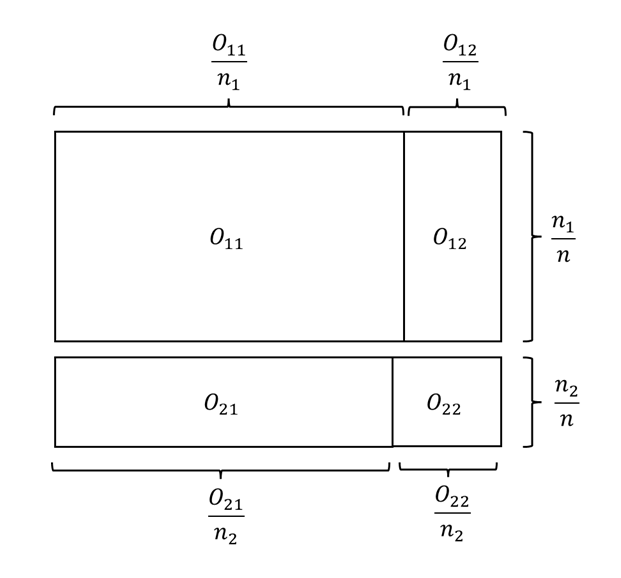
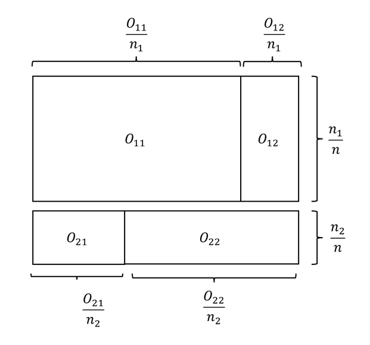
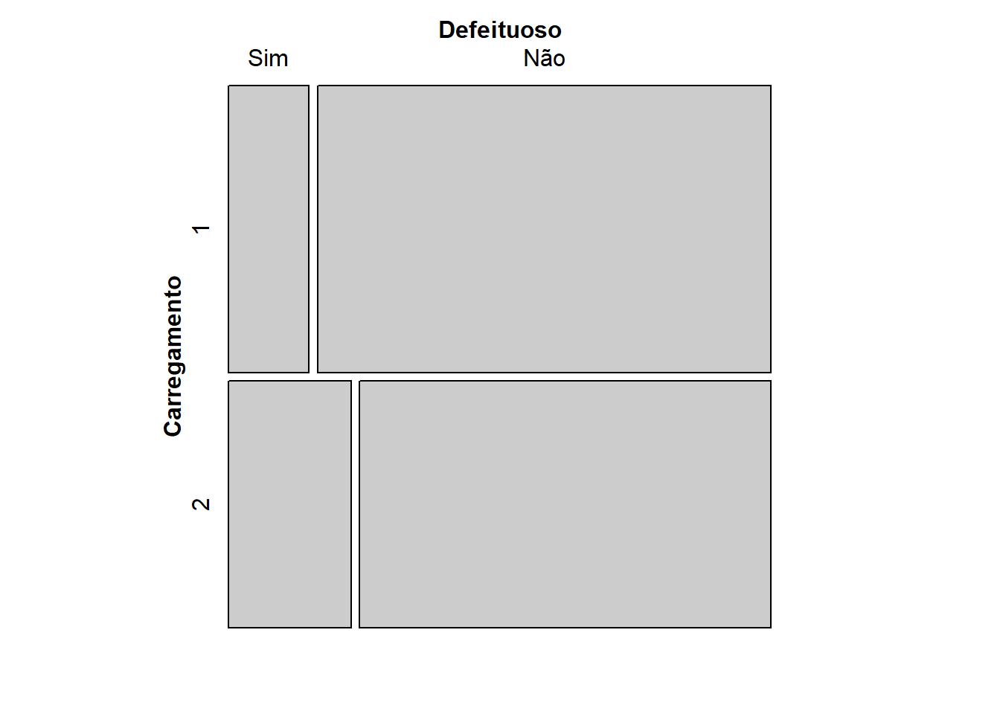
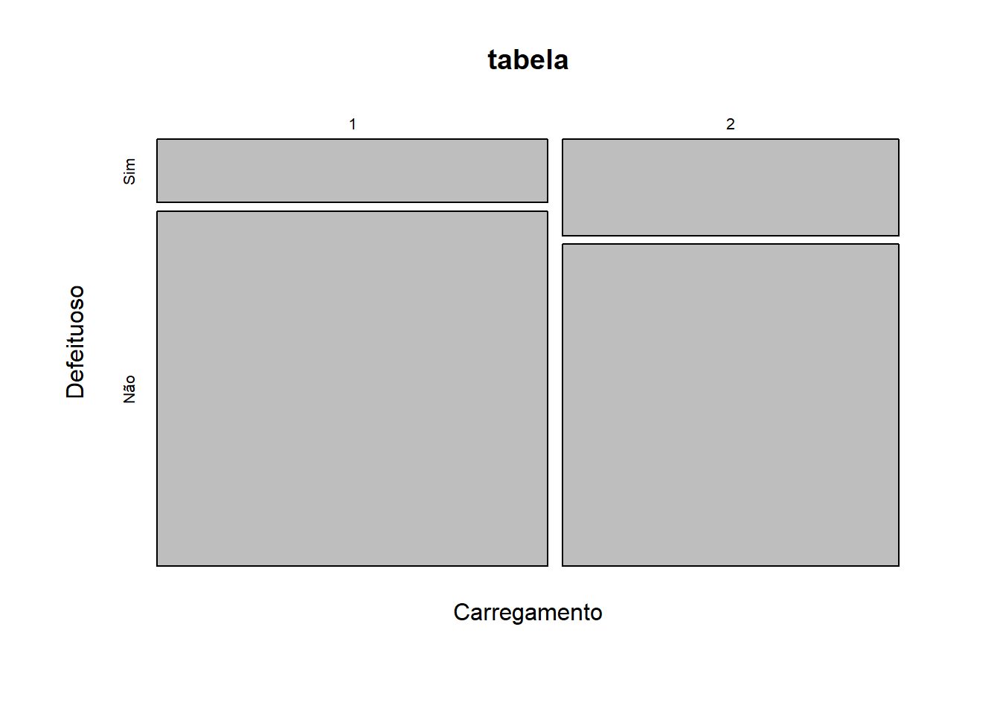
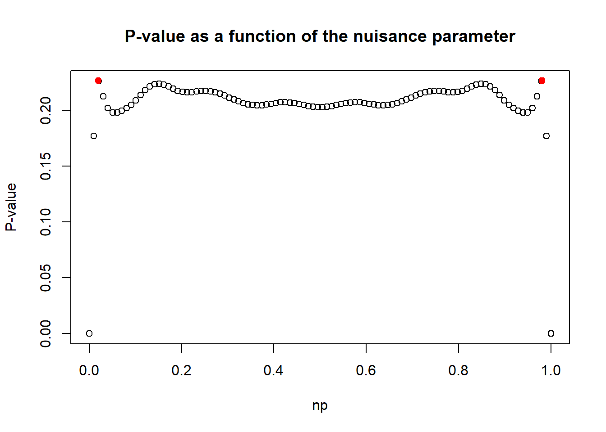

tabela <- matrix( c(13,17,73,57),2,2)
dimnames(tabela) <- list( Carregamento = c(1,2), Defeituoso = c('Sim','Não'))
tabela Defeituoso
Carregamento Sim Não
1 13 73
2 17 57Uma tabela de contingência é uma matriz de números naturais que representam frequências absolutas. Por exemplo, um entomologista coletou 37 insetos, conforme a seguinte tabela de contingência
\[\begin{array}{ccc|c}\hline \hbox{Mariposa} & \hbox{Gafanhoto} & \hbox{Outros} &\hbox{Total} \\ \hline 12 & 22& 3 &37 \\ \hline \end{array}\]
A tabela acima é uma tabela de contingência univariada e representa observações de uma variável categórica com três classes: Mariposa, Gafanhoto, Outros. \end{frame} O entomologista pode aumentar o nível de informação adicionando o evento no qual o inseto foi encontrado vivo. A nova tabela de contingência fica:
\[\begin{array}{c|ccc|c}\hline & \hbox{Mariposa} & \hbox{Gafanhoto} & \hbox{Outros} & \hbox{Total}\\ \hline \hbox{Vivo} & 3 & 21 & 3 & 27 \\ \hbox{Morto} & 9&1&0&10\\ \hline \hbox{Total}&12&22&3&37\\ \hline \end{array}\]
Agora, a tabela apresenta observações e um par de variáveis categóricas, uma com as classes {Mariposa, Gafanhoto, Outros} e outra com as classes {Vivo, Morto}. Note que a coluna Total se refere ao total marginal das linhas, enquanto que a linha Total se refere ao total marginal das colunas.
As tabelas construídas com duas variáveis são denominadas tabelas de dupla entrada ou ainda tabelas de contingência \(r\times c\) onde \(r\) é o número de linhas (categorias da primeira variável) e \(c\) o número de colunas (categorias da segunda variável).
As tabelas de contingência podem ter múltiplas entradas. Abaixo, mostramos uma tabela com três entradas com informações dos tripulantes do Titanic. As variáveis são Sobreviveu (Sim/Não), Sexo (Masculino/Feminino) e Classe (1ª,2ª,3ª), configurando um tabela \(2\times 2\times 3\).
\[\begin{array}{l l |c c c |r} \hline \text{Sobreviveu} & \text{Sexo} & \text{Classe 1ª} & \text{Classe 2ª} & \text{Classe 3ª} & \text{Total} \\ \hline \text{Não} & \text{Feminino} & 3 & 6 & 72 & \mathbf{81} \\ & \text{Masculino} & 118 & 146 & 358 & \mathbf{622} \\ \hline \text{Sim} & \text{Feminino} & 91 & 70 & 72 & \mathbf{233} \\ & \text{Masculino} & 57 & 17 & 75 & \mathbf{149} \\ \hline \textbf{Total} & & \mathbf{269} & \mathbf{239} & \mathbf{577} & \mathbf{1085} \\ \hline \end{array}\]
Sejam \(X_1,\ldots,X_{n_1}\) e \(Y_1,\ldots,Y_{n_2}\) duas amostras aleatórias, independentes entre si, onde \(X_i\) e \(Y_j\) só podem assumir duas classes. Esses resultados são organizados em um tabela de contingência de dupla entrada, como essa abaixo:
\[\begin{array}{c|cc|c}\hline & \hbox{Classe 1}& \hbox{Classe 2} & \hbox{Total} \\ \hline \hbox{Amostra 1 } (X) & O_{11} & O_{12} & n_1\\ \hbox{Amostra 2 } (Y) & O_{21} & O_{22} & n_2 \\ \hline \hbox{Total} &C_1 & C_2 & N=n_1+n_2\\ \end{array}\]
Sejam \(p_X\) e \(p_Y\) as probabilidades de ocorrência do evento na classe 1 para as populações de \(X\) e \(Y\), respectivamente. Estamos interessados nas seguintes hipóteses:
Teste bilateral:
\[\begin{align*} H_0&: p_X=p_Y \\ H_1&:p_X\neq p_Y \end{align*}\]
Teste unilateral:
\[\begin{align*} \left\{\begin{array}{l}H_0: p_X\leq p_Y \\ H_1:p_X>p_Y \end{array}\right.\;\;\;\;\;\left\{ \begin{array}{l}H_0:p_X\geq p_Y \\ H_1:p_X<p_Y \end{array}\right. \end{align*}\]
É natural comparar \(O_{11}/n_1\) contra \(O_{21}/n_2\) realizar o teste. Para a hipótese simples, sob \(H_0:p_X=p_Y=p\), teremos que
\[\begin{align}O_{11}\sim\hbox{Binomial}(n_1,p)\\O_{21}\sim\hbox{Binomial}(n_2,p)\end{align}\] Como \[\begin{align}E\left(\frac{O_{11}}{n_1}-\frac{O_{21}}{n_2}\right)=&0\\Var\left(\frac{O_{11}}{n_1}-\frac{O_{21}}{n_2}\right)&=\left(\frac{1}{n_1}+\frac{1}{n_2}\right)p(1-p)\end{align},\] teremos que, pelo Teorema Central do Limite,
\[\begin{align}\frac{\frac{O_{11}}{n_1}-\frac{O_{21}}{n_2}}{\sqrt{\left(\frac{1}{n_1}+\frac{1}{n_2}\right)p(1-p)}}&=\frac{1}{\sqrt{n_1n_2}}\frac{O_{11}n_2-O_{21}n_1}{\sqrt{Np(1-p)}}\\ &=\frac{1}{\sqrt{n_1n_2}}\frac{O_{11}O_{21}-O_{12}O_{21}}{\sqrt{Np(1-p)}}\stackrel{D}{\to}N(0,1)\end{align}.\] Agora, observe que, pela Lei Forte dos Grandes Números
\[\hat{p}=\frac{C_1}{N}\stackrel{P}{\to}p\] o que implica em \[\hat{p}(1-\hat{p})=\frac{C_1}{N}\frac{C_2}{N}\stackrel{P}{\to}p(1-p).\] Portanto, pelo Teorema de Slutsky, teremos que \[\frac{1}{\sqrt{n_1n_2}}\frac{O_{11}O_{22}-O_{12}O_{21}}{\sqrt{N\hat{p}(1-\hat{p})}}=\sqrt{N}\frac{O_{11}O_{22}-O_{12}O_{21}}{\sqrt{n_1n_2C_1C_2}}\stackrel{D}{\to}N(0,1)\]
Sobre a validade da aproximação
A estatística do teste Qui-quadrado para a diferença entre probabilidades em tabelas \(2\times 2\) é
\[T_1=\sqrt{N}\frac{O_{11}O_{22}-O_{12}O_{21}}{\sqrt{n_1n_2C_1C_2}},\] e é equivalente a etatística do teste Z para diferença entre proporções. Para grandes amostras, a região de rejeição para a hipótese nula simples é \[R=\{t_1: |t_1|>z_{1-\alpha/2}\}\] onde \(z_{1-\alpha/2}\) é o quantil \((1-\alpha/2)\) da normal padrão. Podemos, alternativamente, fazer \(T_2=T_1^2\), com região de rejeição \[R=\{t_2: t_2>\chi^2_{1,1-\alpha}\}\] onde \(\chi^2_{\nu,1-\alpha}\) é o quantil \((1-\alpha)\) da distribuição \(\chi^2_\nu\).
Para o teste unilateral, utilizamos a distribuição normal padrão, desde que o tamanho da amostra permita o uso do TCL.
Via de regra, considera-se que o TCL é razoável considerando a distribuição binomial como base quando
\(np \geq 5\) (Número esperado de sucessos)
\(n \cdot (1-p) \geq 5\) (Número esperado de fracassos)
Conforme discutido, sob \(H_0\) \(p\) pode ser \(\hat{p}=C_1/n\). Portanto, é sempre útil observar a tabela de contagens esperadas:
\[\begin{array}{c|cc|c}\hline & \hbox{Classe 1}& \hbox{Classe 2} & \hbox{Total} \\ \hline \hbox{Amostra 1 } (X) & E_{11}=n_1\hat{p} & E_{12}=n_1(1-\hat{p}) & n_1\\ \hbox{Amostra 2 } (Y) & E_{21}=n_2\hat{p} & E_{22}=n_2(1-\hat{p}) & n_2 \\ \hline \hbox{Total} &C_1 & C_2 & N\\ \hline \end{array}\]
Contudo, é importante ressaltar ser existe um modo de realizar um teste exato, via método de Monte Carlo. Tal solução é apresentada na seção seguinte, sobre Teste Exato de Fisher e o teste de permutação.
Example 4.1 Dois carregamentos de itens manufaturados foram selecionados ao acaso e seus itens foram inspecionados. O objetivo é testar se há diferença entre as proporções de itens defeituosos nos dois carregamentos. Os dados foram organizados na seguinte tabela de contingência
\[\begin{array}{c|cc|c}\hline & \hbox{Defeituoso} & \hbox{Não defeituoso} & \hbox{Total}\\ \hline \hbox{Carregamento 1} & 13 & 73 & 86 \\ \hbox{Carregamento 2} & 17 & 57 & 74 \\ \hline \hbox{Total}& 30 & 130 & 160 \\ \hline \end{array}\]
Seja \(p_1\) a probabilidade de defeito no carregamento 1 e \(p_2\) o mesmo para o carregamento 2. Nossa hipótese nula é \(H_0: p_1=p_2\).
A estatística do teste Qui-quadrado é
\[t_{obs}=\sqrt{160}\frac{13\cdot57-73\cdot17}{\sqrt{86\cdot74\cdot30\cdot130}}=-1,2695\]
Vamos encontrar a tabela de valores esperados, para determinar se o TCL é adequado ao problema. Como \(\hat{p}=30/160=3/16\), a referida tabela segue abaixo:
\[\begin{array}{c|cc|c}\hline & \hbox{Defeituoso} & \hbox{Não defeituoso} & \hbox{Total}\\ \hline \hbox{Carregamento 1} & 86\cdot\frac{3}{16}=16,125 & 86\cdot\frac{13}{16}=69,875 & 86 \\ \hbox{Carregamento 2} & 74\cdot\frac{3}{16}=13,875 & 74\cdot\frac{13}{16}=60,125 & 74 \\ \hline \hbox{Total}& 30 & 130 & 160 \\ \hline \end{array}\]
Como todos os valores esperados são maiores que 5, temos que a aproximação normal é adequada. Como \[\begin{align}P(T_1\geq-1,2695)&=0,8978\\ P(T_1\leq-1,2695)&=0,1021\end{align}\] logo, \[p\hbox{-valor}=0,2042,\] ou seja, não existem evidências de que há diferença na proporção de itens defeituosos dos dois carregamentos.
Exercise 4.1 Na Academia Naval Americana, um novo sistema de iluminação foi instalado no dormitório dos aspirantes. Contudo, existe a conjectura de que o novo sistema está causando problemas de visão. Considere as hipóteses:
\(H_0:\) a proporção de aspirantes com boa visão é maior ou igual ao que era antes da instalação do novo sistema de iluminação
\(H_1:\) a probabilidade de boa visão é menor do que era antes.
Um grupo de aspirantes 4 anos antes da instalação do novo sistema foi selecionado. Outra amostra foi selecionada dentre os aspirantes que já entraram com o novo sistema de iluminação em funcionamento. Foram obtidos os seguintes dados
\[\begin{array}{c|cc|c}\hline & \hbox{Boa visão} & \hbox{Visão prejudicada} & \hbox{Total} \\\hline \hbox{Aspirantes antes do sistema} & 714 & 111& 825\\ \hbox{Aspirantes depois do sistema} & 662 & 154 & 816 \\ \hline \hbox{Total} & 1376 & 265 & 1641 \\ \hline \end{array}\]
Verifique se a aproximação normal é plausível e teste a hipótese de que a visão dos aspirantes está sendo prejudicada com o novo sistema de iluminação.
Definition 4.1 Gráfico de mosaico
O gráfico de mosaico é formado por retângulos, um para cada cela da tabela, dispostos na mesma ordem. A área dos retângulos é proporcional à sua frequência observada, apresentando uma inspeção visual direta das celas. Os retângulos são construídos como segue:
A altura do retângulo da cela \((i,j)\) é proporcional ao total da linha (\(n_i/n\)).
A largura do retângulo da cela \((i,j)\) é proporcional à \(O_{ij}/n_i\).
Em um gráfico de mosaico, as linhas se comportam como um gráfico de barras empilhadas 100%, mostrando como as probabilidades de cada classe se dividem ao longo da linha. Sob \(H_0\), esperamos que as divisões entre as colunas estejam alinhadas através das linhas.


Construção do gráfico de mosaico para tabelas 2x2. (a) Ilustração de um mosaico com \(H_0\) verdadeira. Observe como as linhas verticais são próximas. (b) Ilustração de um mosaico com \(H_0\) falsa. Observe como as linhas verticais estão distantes.
R, vamos utilizar o pacote vcd, que possui a função mosaic, cuja a implementação é a mesma apresentada aqui. Já o pacote graphics (o pacote básico do R) possui a função mosaicplot, no qual a altura do retângulo da cela \((i,j)\) é proporcional ao total da coluna (\(C_j/n\)) e a largura do retângulo da cela \((i,j)\) é proporcional à \(O_{ij}/C_j\). Portanto, ao utilizar outra função para fazer um gráfico de mosaico, as interpretações podem variar.
Example 4.2 De volta ao exemplo Example 4.1, vamos fazer o gráfico de mosaico.
tabela <- matrix( c(13,17,73,57),2,2)
dimnames(tabela) <- list( Carregamento = c(1,2), Defeituoso = c('Sim','Não'))
tabela Defeituoso
Carregamento Sim Não
1 13 73
2 17 57require(vcd)Carregando pacotes exigidos: vcdCarregando pacotes exigidos: gridmosaic(tabela)
Como discutido, olhando as linhas como gráficos de barras empilhadas, temos a representação das frequências da variável Defeituoso. Pode-se ver que as linhas verticais que dividem as classes de Defeituoso estão próximas, o que podem ser indícios de que \(H_0\) não deve ser rejeitada. Vamos realizar o mesmo gráfico com a função mosaicplot:
mosaicplot(tabela)
Observe que o gráfico é o mesmo, mas com a orientação trocada. Aqui, as colunas representam as frequências relativas de cada carregamento Deste modo, devemos rejeitar \(H_0\) se as linhas horizontais que dividem as classes da variável Defeituoso estiverem distantes entre si (desalinhadas).
Essa proximidade visual das linhas confirma o resultado obtido pelo teste de hipóteses (p-valor=0,2042), indicando que a variação observada entre os carregamentos 1 e 2 pode ser atribuída ao erro amostral, e não a uma diferença real nas probabilidades de defeito.
Exercise 4.2 Durante um surto de uma nova variante de Dengue em Manaus, a Secretaria de Saúde comparou dois tipos de testes diagnósticos (Teste A e Teste B) em 100 pacientes sintomáticos. Queremos saber se a taxa de detecção de casos positivos depende do tipo de teste utilizado.
\[\begin{array}{l|cc|c}\hline & \hbox{Teste Positivo (+)} & \hbox{Teste Negativo (-)} & \hbox{Total de Pacientes} \\ \hline\hbox{Teste tipo A} &40& 10& 50 \\ \hbox{Teste tipo B} & 20&30 &50 \\ \hline \hbox{Total}&60&40&N = 100\\ \hline\end{array}\]
Esboce o gráfico de mosaico
Verifique se há diferença entre os testes ao nível de significância de 5%.
Exercise 4.3 O artigo Polack et al. (2020) apresenta um estudo clínico de fase 3 randomizado e controlado por placebo que avaliou a eficácia da vacina BNT162b2 (Pfizer-BioNTech COVID-19) em participantes com 16 anos ou mais sem evidências de infecção por SARS-CoV-2. A tabela abaixo apresenta o número de participantes por grupo e o número de casos de Covid-19.
\[\begin{array}{l|cc|c}\hline & \hbox{Não teve Covid-19} & \hbox{Teve Covid-19} & \hbox{Total} \\ \hline \hbox{Recebeu vacina} & 18.190 & 8 & 18.198 \\ \hbox{Recebeu placebo} & 18.163& 162 & 18.325 \\ \hline \hbox{Total} & 36.353 & 170 & 36.523 \\ \hline \end{array}\]
Teste a hipótese de que a vacina é eficaz.
O teste exato da Barnard
Por ser um teste aproximado, o teste Qui-quadrado não pode ser executado em todas as situações. Contudo, a estatística
\[T_2=T_1^2=N\frac{(O_{11}O_{22}-O_{12}O_{21})^2}{n_1n_2C_1C_2},\]
ainda é uma estatística de teste válida, sendo que apenas sua distribuição sob a hipótese nula desconhecida.
Conforme visto, essa estatística \(T_2\) é função de \(O_{11}\) e \(O_{21}\), considerando que o tamanho das amostras (marginal das linhas) é conhecido. Portanto, sem perda de generalidade, escreveremos \[W=T_2(O_{11},O_{21}).\]
Como \(W\) é função de \(O_{11}\) e \(O_{21}\), sabemos que
\[P(W=w)=\sum_{(o_{11},o_{21}): T_2=w}{n_1\choose o_{11}}p_1^{o_{11}}(1-p_1)^{n_1-o_{11}}{n_2\choose o_{21}}p_2^{o_{21}}(1-p_2)^{n_2-o_{21}}\] e, considerando \(H_0:p_1=p_2=p\), teremos
\[P(W=w|p)=\sum_{(o_{11},o_{21}): T_2=w}{n_1\choose o_{11}}{n_2\choose o_{21}}p^{c_{1}}(1-p)^{c_2}\] Portanto, procuramos pelo ponto crítico \(w^*\) no qual \[\sup_{0\leq p\leq 1}P(W\geq w^*|p)\leq \alpha,\] ou, de maneira equivalente, avaliamos a rejeição da hipótese nula através do p-valor
\[\hbox{p-valor}=\sup_{0\leq p\leq 1}P(W\geq w_{obs}|p).\] Este é o teste de Barnard (1945). Sua lógica é construir todas as tabelas \(2\times 2\) e encontrar \(p\) que traz o pior cenário. Existem diversas implementações deste no R. Aqui, vamos utilizar o pacote Exact, com a função exact.test. Abaixo, apresentamos o uso dessa função para o conjunto de dados sobre o número de itens defeituosos em dois carregamentos.
library(Exact)To use this package, you must install the ExactData package. To install
that package, run `install.packages('ExactData',
repos='https://pcalhoun1.github.io/drat/', type='source')`.tabela <- matrix( c(13,17,73,57),2,2)
dimnames(tabela) <- list( Carregamento = c(1,2), Defeituoso = c('Sim','Não'))
exact.test(tabela)
Z-pooled Exact Test
data: 13 out of 86 vs. 17 out of 74
test statistic = -1.2695, first sample size = 86, second sample size =
74, p-value = 0.2264
alternative hypothesis: true difference in proportion is not equal to 0
sample estimates:
difference in proportion
-0.07856694 Observe que este p-valor é, como esperado, próximo do obtido via aproxomação normal (0,2042).
Considere novamente que \(X_1,\ldots,X_{n_1}\) e \(Y_1,\ldots,Y_{n_2}\) são duas amostras aleatórias, independentes entre si, onde \(X_i\) e \(Y_j\) só podem assumir duas classes. Os resultados são organizados em uma tabela de contingência de dupla entrada, como essa abaixo:
\[\begin{array}{c|cc|c}\hline & \hbox{Classe 1}& \hbox{Classe 2} & \hbox{Total} \\ \hline \hbox{Amostra 1 } (X) & O_{11} & O_{12} & n_1\\ \hbox{Amostra 2 } (Y) & O_{21} & O_{22} & n_2 \\ \hline \hbox{Total} &C_1 & C_2 & N=n_1+n_2\\ \hline \end{array}\]
Assim como na seção anterior, \(H_0: p_1=p_2=p\), onde \(p_i\) é a probabilidade de se obter a Classe 1 para a população da amostra aleatória \(i\).
Recorde novamente que \(O_{11}\sim\hbox{Binomial}(n_1,p_1)\) e \(O_{21}=C_1-O_{11}\sim\hbox{Binomial}(n_2,p_2)\), o que implica em
\[\begin{align}P(O_{11}=x,O_{21}=c_1-x)&={n_1 \choose x}p_1^x(1-p_1)^{n_1-x}{n_2 \choose c_1-x}p_2^{c_1-x}(1-p_2)^{n_2-c_1+x}\\&={n_1\choose x}{n_2\choose c_1-x}\left[\left.\frac{p_1}{1-p_1}\right/\frac{p_2}{1-p_2}\right]^x p_2^{c_2}(1-p_2)^{n_2-c_1}\end{align}\] Fazendo
\[\phi=\left.\frac{p_1}{1-p_1}\right/\frac{p_2}{1-p_2},\] teremos
\[\begin{align}P(O_{11}=o_{11},O_{21}=c_1-x)&={n_1 \choose o_{11}}p_1^{o_{11}}(1-p_1)^{n_1-x}{n_2 \choose c_1-{o_{11}}}p_2^{c_1-{o_{11}}}(1-p_2)^{n_2-c_1+{o_{11}}}\\&={n_1\choose {o_{11}}}{n_2\choose c_1-{o_{11}}}\phi^{o_{11}} p_2^{c_1}(1-p_2)^{n_2-c_1}\end{align}\]
A razão entre a probabilidade de sucesso e a de fracasso é denominada chance, enquanto que \(\phi\) é denominada razão de chances. É importante notar que \(H_0\) pode ser reescrita como \(H_0:\phi=1\).
As estatísticas suficientes para \((\phi,p_2)\) são \(O_{11},C_1\). Contudo, como \(C_1\sim\hbox{Binomial}(N,p_2)\), temos que ela é suficiente para \(p_2\) e ancilar para \(\phi\). Deste modo, a distribuição de \({o_{11}}|C_1\) não depende de \(p\). Explicitamente, temos
\[ \begin{align} P({O_{11}}=x|C_1=c_1)&=\frac{P(X=x,C_1=c_1)}{{N \choose c_1}p_2^{c_1}(1-p_2)^{N-c_1} }=\frac{P(X=x,X+Y=c_1)}{{N \choose c_1}p_2^{c_1}(1-p_2)^{N-c_1} }\\&=\frac{P(X=x,Y=c_1-x)}{{N \choose c_1}(1-p_2)^{c_1}p_2^{N-c_1} }=\frac{P(X=x)P(Y=c_1-x)}{{N \choose c_1}p_2^{c_1}(1-p_2)^{N-c_1} }\\&= \frac{{n_1 \choose x}p_1^{x}(1-p_1)^{n_1-x}{n_2\choose c_1-x} p_2^{c_1-x}(1-p_2)^{n_2-c_1+x}}{ {N \choose c_1} p_2^{c_1}(1-p_2)^{N-c_1}}\\&= \frac{{n_1 \choose x}{n_2 \choose c_1-x}}{{N \choose c_1}}\phi^x=\frac{{n_1 \choose x}{N-n_1 \choose c_1-x}}{{N \choose c_1}}\phi^x \end{align} \] e, sob \(H_0\), \(O_{11}|C_1=c_1\sim\hbox{Hipergeométrica}(N,n_1,c_1)\).
O teste exato de Fisher consiste em utilizar a estatística \(O_{11}\) condicionada a \(C_1=c_1\). Valores elevados de \(O_{11}\) dão suporte para \(H_1: p_1>p_2\), enquanto que valores baixos dão suporte para \(H_1:p_1<p_2\). A tabela abaixo resume as hipóteses que podem ser testadas e seus p-valores.
Example 4.3 Quatorze recém-graduados, 10 homens e 4 mulheres, todos igualmente qualificados, estão sendo designados pelo presidente de um banco aos seus novos cargos. 10 deles serão atendentes de caixas e 4 representantes de contas. A hipótese alternativa é a de que mulheres tem mais chance de conseguir a vaga mais desejada, que é a de representante de contas. A atribuição observada é dada abaixo:
\[\begin{array}{c|cc|c}\hline & \hbox{Representante de contas}& \hbox{Atendente de caixa} & \hbox{Total} \\ \hline \hbox{Mulher} & 3 & 1 & 4 \\ \hbox{Homem} & 1 & 9 & 10\\ \hline \hbox{Total} &4 & 10 & 14\\ \hline \end{array}\]
Após a atribuição, apenas 1 mulher ficou com uma vaga de caixa. Existem evidências para rejeitar a hipótese nula?
Sob a hipótese nula, temos que \(O_{11}|C_1=4\sim\hbox{Hipergeométrica}(14,4,4)\). Como \(o_{11}=3\), logo
\[\hbox{p-valor}=P(O_{11}\geq 3|C_1=4)=0,0409\] o que nos leva a rejeitar a hipótese nula, oou seja, há evidências de que as mulheres tem maiores chances de obter essa vaga.
No R, podemos obter esse \(p\)-valor com o comando
# phyper( o11, n1, n2, c1 ) calcula P(O11 <= o11)
# phyper( o11-1, n1, n2, c1 ) calcula P(O11 > o11)
phyper(2, 4,10, 4, lower.tail = FALSE)[1] 0.04095904ou, preferivelmente, utilizando a função fisher.test:
tabela <- matrix(c(3,1,1,9), 2,2)
dimnames(tabela) <- list( Genero = c('Mulher','Homem'), Vaga = c('Rep. cont', 'Atend caixa'))
tabela Vaga
Genero Rep. cont Atend caixa
Mulher 3 1
Homem 1 9fisher.test(tabela, alternative = 'greater')
Fisher's Exact Test for Count Data
data: tabela
p-value = 0.04096
alternative hypothesis: true odds ratio is greater than 1
95 percent confidence interval:
1.113916 Inf
sample estimates:
odds ratio
18.0326 Exercise 4.4 O Nascimento dos Ensaios Clínicos (James Lind, 1747)
James Lind selecionou 12 marinheiros com escorbuto severo a bordo do navio HMS Salisbury. Ele os dividiu em 6 grupos de dois, mantendo a dieta básica igual para todos, mas adicionando um suplemento diferente para cada par (vinagre, água do mar, cidra, ácido sulfúrico diluído, uma pasta de ervas ou laranjas/limões).
Devido ao custo, apenas o grupo que recebeu laranjas e limões mostrou uma recuperação dramática e rápida (um marinheiro voltou ao serviço em 6 dias, o outro quase totalmente recuperado). Para fins estatísticos, vamos comparar o grupo dos Cítricos contra todos os outros 10 marinheiros que receberam os demais tratamentos (agregados aqui como “Outros Tratamentos”).
\[\begin{array}{c|cc|c}\hline\text{Tratamento} & \text{Recuperado} & \text{Não Recuperado} & \text{Total} \\ \hline\text{Cítricos (Laranja/Limão)} & 2 & 0 & 2 \\\text{Outros Tratamentos} & 0 & 10 & 10 \\ \hline\text{Total} & 2 & 10 & 12 \\ \hline\end{array}\]
Verifique se a aproximação do teste Qui-quadrado é válida para esse problema.
Calcule o Teste Exato de Fisher para a hipótese unilateral de que os cítricos aumentam a chance de recuperação (\(H_1: p_{cítrico} > p_{outros}\)). Interprete o resultado.
O Paradoxo de Admissões em Berkeley (Bickel et al., 1975)
Em 1973, a Universidade de California, Berkeley, foi suspeita de discriminação de gênero em suas admissões de pós-graduação. Os dados agregados dos seis maiores departamentos mostravam uma disparidade óbvia.
Considere a tabela de contingência abaixo, que resume o total de candidatos e admitidos por gênero:
\[\begin{array}{c|cc|c}\hline & \hbox{Admitido} & \hbox{Não Admitido} & \hbox{Total} \\ \hline\hbox{Homens} & 3738 & 4704 & 8442 \\ \hbox{Mulheres} & 1494 & 2827 & 4321 \\ \hline\hbox{Total} & 5232 & 7531 & 12763 \\ \hline\end{array}\]
Para entender a origem da disparidade, foram analisados os departamentos separadamente. Abaixo, contrastamos o Departamento A (Engenharia), com alta oferta de vagas, e o Departamento F (Ciências Sociais), altamente seletivo.
Departamento A (Engenharia Mecânica): \[\begin{array}{c|cc|c}\hline \text{Gênero} & \text{Admitido} & \text{Não Admitido} & \text{Total} \\ \hline \text{Homens} & 512 & 313 & 825 \\ \text{Mulheres} & 89 & 19 & 108 \\ \hline \end{array}\]
Departamento F (Ciências Sociais/Humanas): \[\begin{array}{c|cc|c}\hline \text{Gênero} & \text{Admitido} & \text{Não Admitido} & \text{Total} \\ \hline \text{Homens} & 22 & 250 & 272 \\ \text{Mulheres} & 24 & 317 & 341 \\ \hline \end{array}\]
Existe evidência estatística de viés contra as mulheres quando realizamos a análise por departamento?
Explique como a escolha da variável de controle (Departamento) altera a conclusão sobre a existência de viés.
\begin{block}{Dados}
Os dados estão organizados em $k$s tabelas $2\times 2$, cada uma com totais de linhas e colunas fixados (não aleatórios). A $i$-ésima tabela é da forma
\begin{table}[]
\centering
\begin{tabular}{c|cc|c}\hline
& Coluna 1& Coluna 2 & Total \\ \hline
Linha 1 & $x_i$ & $r_i-x_i$ & $r_i$\\
Linha 2 & $c_i-x_i$ & $N_i-r_i-c_i+x_i$ & $N_i-r_i$ \\ \hline
Total & $c_i$ & $N_i-c_i$ & $N_i$\\ \hline
\end{tabular}
\end{table}
Além disso, cada tabela é obtida de um experimento independente dos demais.
\end{block}
\end{frame}
%=========================================================== % Aula 9 %===========================================================
\end{frame}
\end{frame}
%=========================================================== % Aula 10 %===========================================================
\end{frame}
\end{frame}
\end{frame}
\end{frame}
%=========================================================== % Aula 14 %===========================================================